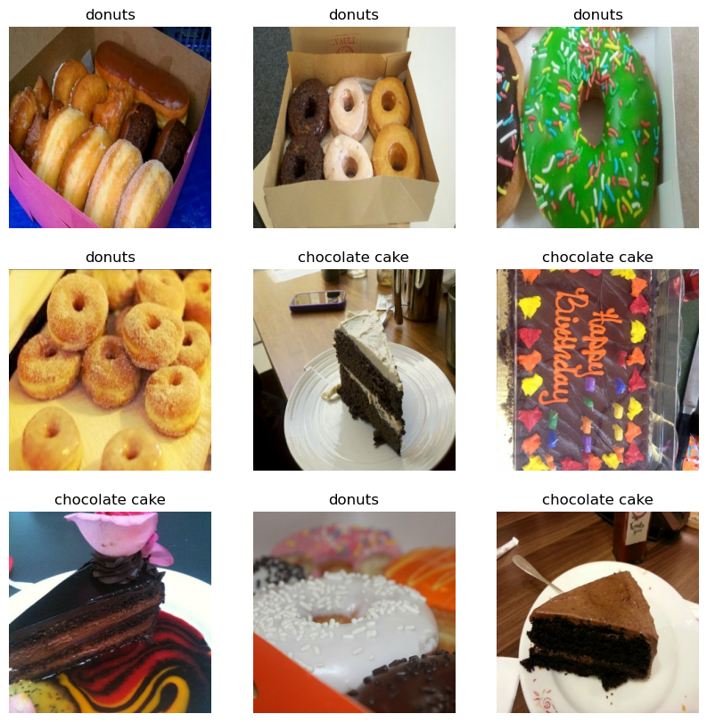

Image Classification Using Transfer Learning and Data Augmentation in TensorFlow
Introduction
In this project, I tackled the problem of image classification using transfer learning and data augmentation. Specifically, I aimed to classify images into two categories: chocolate cake and donuts. This project leveraged TensorFlow and Keras to utilize pre-trained models and enhance the training process through data augmentation techniques.
Dataset Preparation
I loaded the dataset of images from Kaggle, with an 80-20 split for training and validation sets. Using TensorFlow's tf.keras.preprocessing.image_dataset_from_directory function streamlined the handling of image data and batch creation for training.
Data Augmentation
Given the small size of the dataset, data augmentation was crucial to improve the model's generalization. Random horizontal flipping and rotation were applied to the training images. This technique helped to artificially expand the training set by creating modified versions of the images, reducing overfitting and improving the model's robustness.
Visualizing the Data
Visualizing both the original and augmented data was essential to understand the transformations applied and the diversity introduced into the dataset. This step provided insights into how data augmentation helped create varied training examples, which is beneficial for model training.
Model Architecture
I used the Xception model, pre-trained on ImageNet, as the base model. Transfer learning involves leveraging a pre-trained model on a large dataset and fine-tuning it for my specific task. This approach is advantageous as it reduces training time and improves performance, especially with limited data.
The base model's layers were frozen initially, preventing their weights from being updated during the training of the new top layers. A normalization layer was added to scale the input images to the range required by the pre-trained model. The new top layers consisted of global average pooling, dropout for regularization, and a dense output layer.
Training the Model
The training process began with the top layers while keeping the base model frozen. This allowed the new layers to learn relevant features for my classification task. After initial training, the base model was unfrozen, and fine-tuning was performed with a low learning rate to enhance accuracy further. This two-phase training approach ensured that the model learned both the new task-specific features and fine-tuned the pre-trained layers to improve performance.
Prediction and Results
After training, the model was tested on new images to classify them as either chocolate cake or donuts. The predictions were used to save the images into their respective directories based on the model's output. This practical application demonstrated the model's ability to generalize and accurately classify unseen data.
Conclusion
This project demonstrated the effectiveness of transfer learning and data augmentation in image classification tasks. By leveraging pre-trained models and augmenting data, high accuracy can be achieved even with limited datasets. This approach is not only efficient but also adaptable to various applications in computer vision. Transfer learning significantly reduces the computational resources and time required for training, making it a powerful tool in the field of machine learning and deep learning.